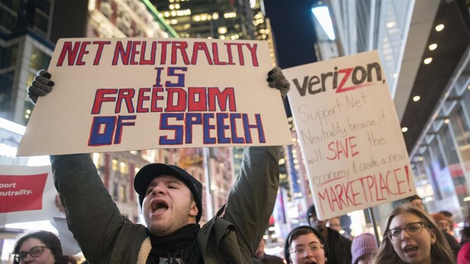

I found this article hard to read, but impressive at the same time for the same reason. This was due to the fact that Bush over loaded the reader with ideas. The amount was difficult for me to take in but the quality was really amazing. Bush wrote this in 1945, and yet he predicted a future correctly for so many things. For example, he foresaw that we would be able to see the pictures we snap instantly. He also foresaw how versatile computers were going to get. You know, maybe his point is proved with my reaction to this article containing so much information. His point is that we have a limited memory. What he proposes as a solution, the "memex" is honestly basically just a cell phone or computer. Furthermore, the trails he talks about reminds me of mindmaps or filepaths. Bush really knew what direction society needed to go to be technologically efficient.

I enjoyed this article more than the last one, as it was easy to digest. I agree with Berners-Lee that we create the web. It's one of our greatest sources of power, some of that power still untapped. Anyone should be able to access any type of information, it should be universal. But one thing I didn't agree with him on was that I don't think isolation is a bad thing. I don't think you should necessarily be able to send information from site to site. I'm also grateful that he explained net neutrality. I'm pretty sure I saw that our net neutrality was being threatened a couple of years ago, and now I finally understand what that means.
